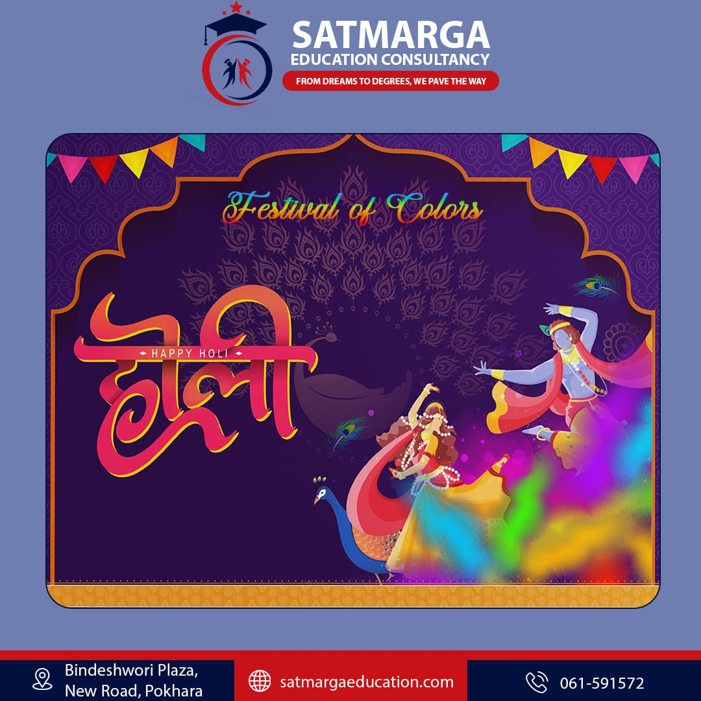
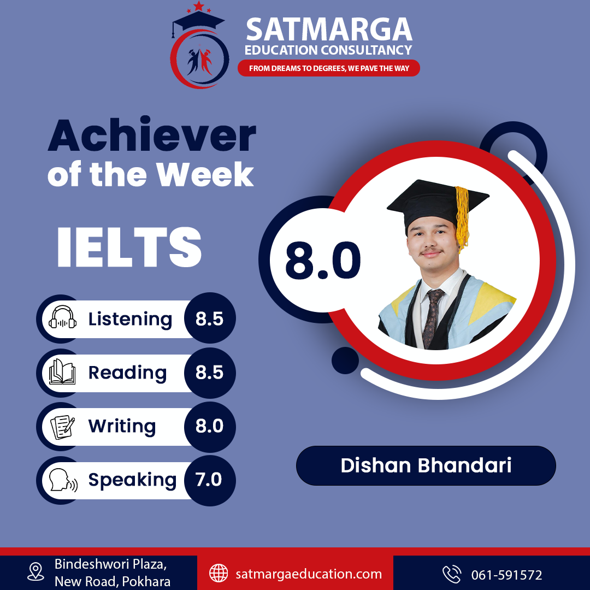
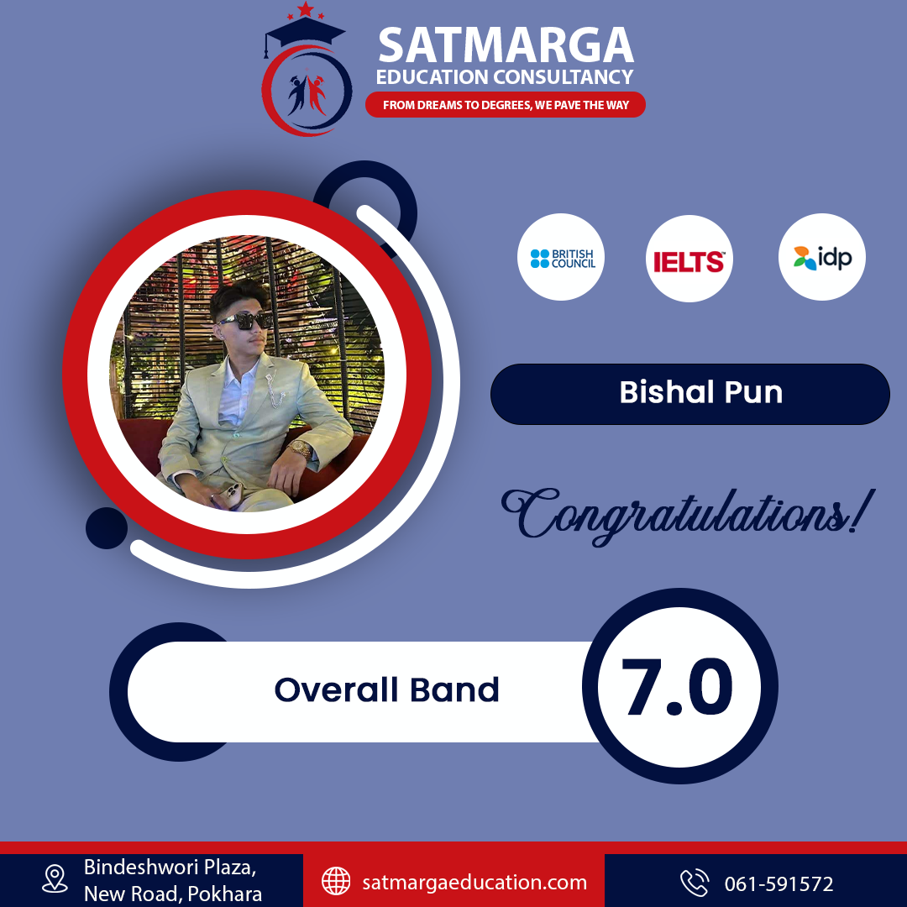
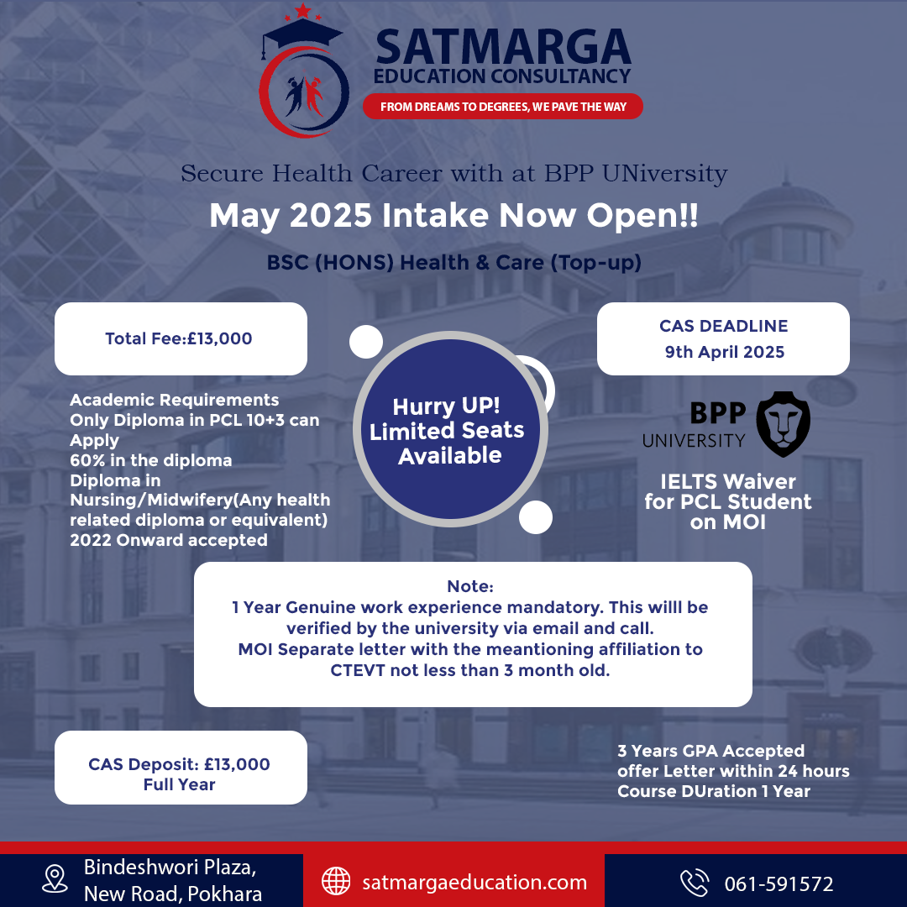

Satmarga Education Consultancy
The Challenge
Developing a cohesive brand identity for Satmarga Education Consultancy that conveys trust, professionalism, and global reach. The design needed to resonate with students aspiring for international education while maintaining a clean, academic, yet modern aesthetic across all marketing collateral.
The Approach
I focused on a sophisticated color palette and strong typography to establish a premium presence. For the marketing assets, I prioritized clear information hierarchy and impactful visual storytelling. The resulting design system ensures a consistent and trustworthy brand image across digital and print media, effectively supporting the consultancy's mission to guide students towards their academic goals.
Project Gallery



